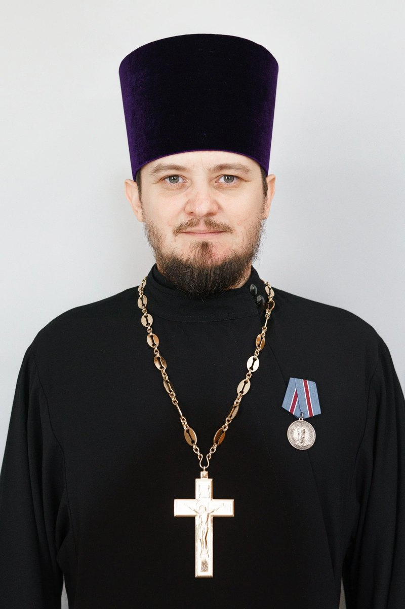
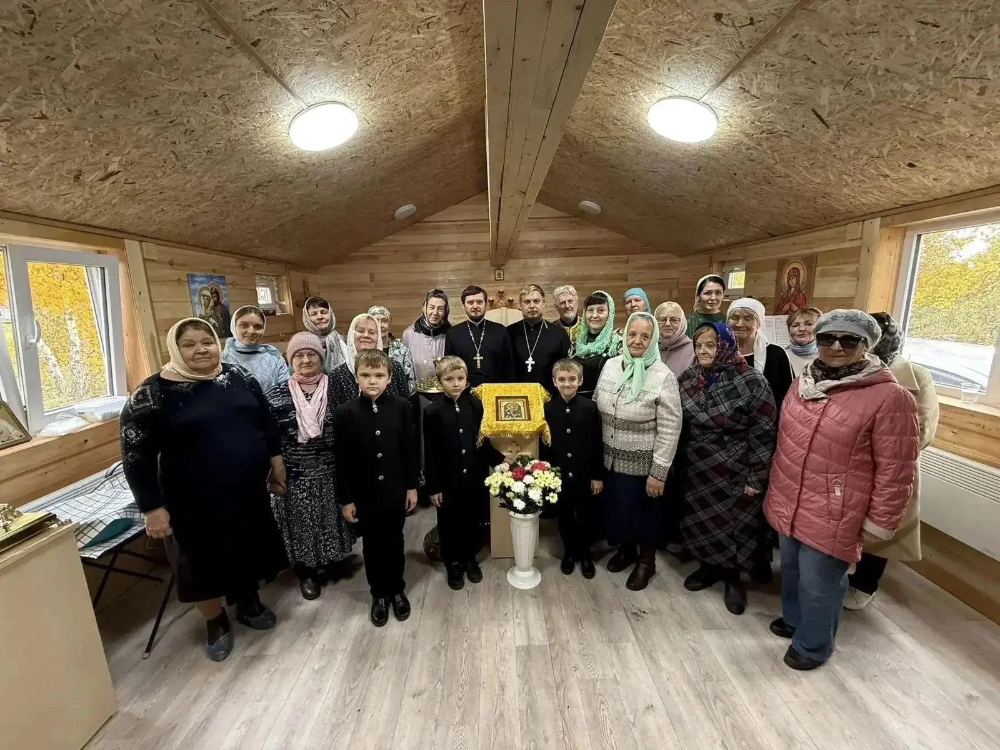
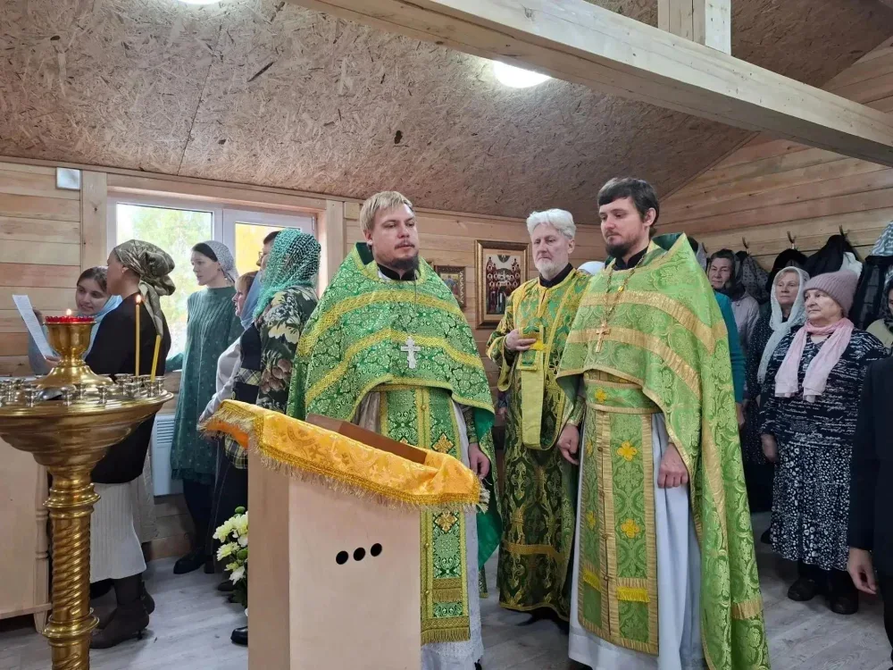
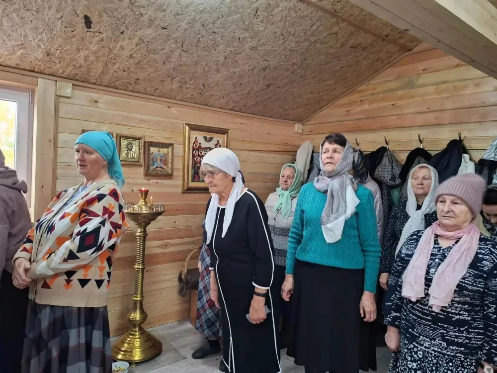
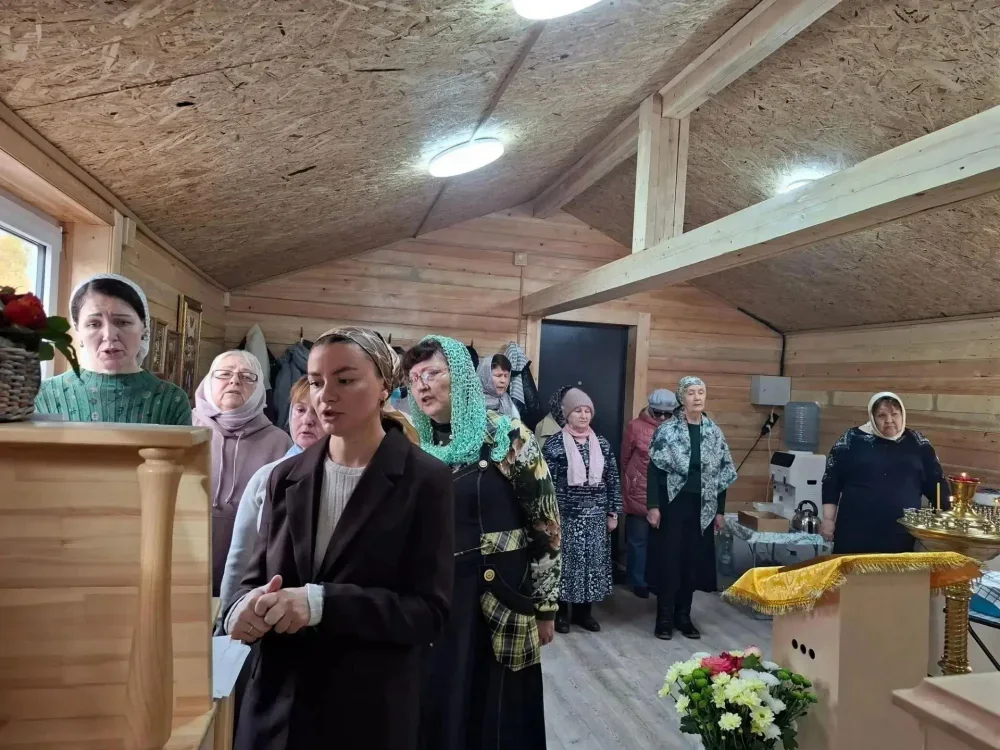
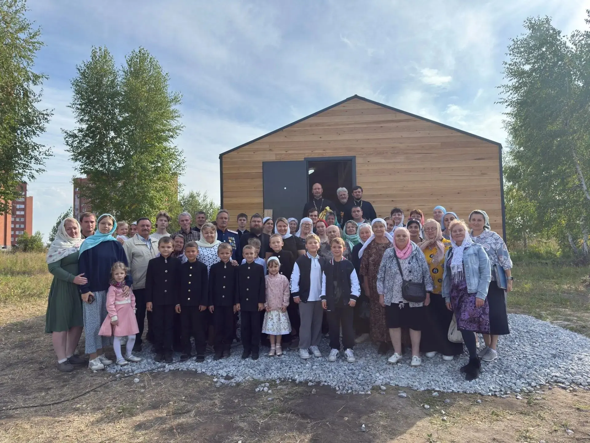

иерей





Бердск
Богослужения во временном храме
Ориентир: Бердск, ул. Солнечная, 40 — ближайший к храму дом. Это не адрес храма.
Новый приход во имя преподобного Сергия Радонежского развивается в микрорайоне Белокаменный города Бердска. Во временном храме богослужения начались в сентябре 2026 года. Храм был построен в короткие сроки и подготовлен к совершению Литургии силами общины.
8 октября 2026 года община впервые отпраздновала престольный праздник. После Литургии совершили славление преподобному Сергию, затем прихожане и гости собрались на общую трапезу.
8 октября — преставление преподобного Сергия Радонежского
Иерей Сергий Рудомётов — настоятель по действующей приходской ленте.
Богослужения совершаются по приходскому расписанию. Дни и время уточняйте в храме.
Дни и часы открытия уточняйте у сотрудников прихода.
В праздничные дни порядок богослужений может меняться. Перед поездкой уточните время в приходе.
Формирование приходской общины, регулярные богослужения во временном храме, совместные приходские трапезы. Первый престольный праздник община отметила 8 октября 2026 года.

В сентябре в микрорайоне Белокаменный состоялось богослужение во временном Сергиевском храме. Литургию совершил протоиерей Павел Плотников вместе с настоятелем иереем Сергием Рудомётовым и диаконом Олегом Рыжковым. Жители микрорайона пришли на молитву семьями.

8 октября 2026 года временный храм преподобного Сергия Радонежского в Бердске впервые отметил престольный праздник. После литургии совершили славление святому, а затем прихожане и гости собрались за праздничной трапезой. Настоятель иерей Сергий Рудомётов рассказал о начале жизни новой общины.
Проверено 19 октября 2026 г.. Даты в исторических сообщениях не означают действующего расписания.